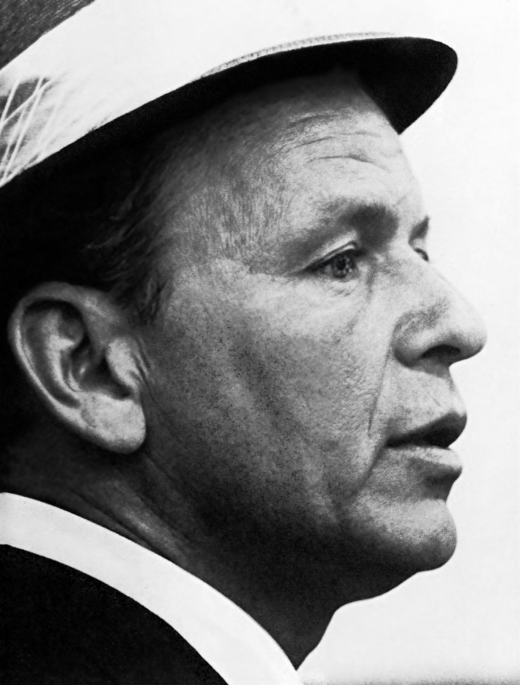

Strangers in the Night is a Bert Kaempfert melody that Frank Sinatra recorded on April 11, 1966.
Reprise rushed it out the next day, and it reached number one in both the US and the UK.
Sinatra reportedly disliked it, yet it won him Record of the Year.

Table of Contents
- The Story Behind the Song
- Recording the Sinatra Version
- The Chart Run and Awards
- Legacy and Disputes
- FAQ
The Story Behind Strangers in the Night
From "Beddy Bye" to a Sinatra Single
The German bandleader Bert Kaempfert wrote the tune as an instrumental.
He titled it "Beddy Bye" and used it in the 1966 film A Man Could Get Killed.
The film starred James Garner and Melina Mercouri.
Producer Jimmy Bowen said Sinatra would record the melody only if it got lyrics and a new title.
Two earlier sets of lyrics were rejected before Charles Singleton and Eddie Snyder delivered the words.
A Race Against Two Rivals
Bobby Darin recorded the song on March 23, 1966, but his version was never released.
Jack Jones followed on April 8, and his single failed to chart.
Jones's recording ended up as the B-side of "The Impossible Dream."
Bowen then rushed the Sinatra version to radio stations in the top 50 markets.
Recording the Sinatra Version
The April 11 Session
Sinatra cut the vocal on April 11, 1966, at United Western Recorders on Sunset Boulevard in Los Angeles.
Reprise released the single on April 12.
Ernie Freeman arranged it, and Bowen produced it.
Hal Blaine played drums and has said he reused the beat from "Be My Baby."
You can read that drummer's story in our Be My Baby feature.
Glen Campbell played rhythm guitar, in his first session with Sinatra.
Doo-Be-Doo-Be-Doo
The record's most recognizable moment is Sinatra's scat singing near the end.
It was an improvisation, and it came on the second take.
Wikipedia reports that the cartoon name Scooby-Doo is said to derive from that scat.
CBS executive Fred Silverman reportedly heard the song on a flight in 1968.
| Chart | Detail | Result |
|---|---|---|
| Billboard Hot 100 | Entered May 7, 1966 | No. 1 on July 2, 1966 |
| Billboard Easy Listening | Weeks at the top | No. 1 (7 weeks) |
| UK Singles | Weeks at the top | No. 1 (3 weeks) |
| Year-end Hot 100, 1966 | Final ranking | No. 8 |
The Chart Run and Awards
Sinatra's First Hot 100 Number One in 11 Years
The single reached number one on the Hot 100 on July 2, 1966.
Wikipedia describes it as Sinatra's first chart-topper on that list in 11 years.
It was also number one in Australia, France, Ireland, Italy and several other countries.
Reprise general manager Mo Ostin told Billboard, "He's never been this hot."
Grammys and the Album
At the 1967 Grammys, the song won Record of the Year and Best Male Pop Vocal Performance.
Ernie Freeman also won Best Arrangement.
The song took the Golden Globe for Best Original Song as well.
Reprise issued the album Strangers in the Night on May 30, 1966.
It reached number one on the US album chart and went Platinum.
Legacy and Disputes
A Song Sinatra Disliked
Sinatra reportedly despised the song.
Reprise head Joe Smith said Sinatra thought it was about two men in a bar.
In concert he often changed the lyrics as a joke.
Who Wrote the Melody?
Kaempfert took sole credit, but others disputed it.
Avo Uvezian told The New York Times he composed it as "Broken Guitar."
The French songwriter Michel Philippe-Gérard claimed it came from his 1953 "Magic Tango."
A Paris court ruled in 1971 that there was no plagiarism.
Other Versions
- Kaempfert's own instrumental, which reached No. 8 on the Adult Contemporary chart
- Gerry and the Pacemakers' 1966 recording
- Bette Midler's 1976 cover, which reached No. 45 on the same chart
About 200 versions existed by 1967.
Where It Fits
The recording belongs to 1966, and it sits on our 100 best 60s songs list.
Sinatra's wider career is in our Frank Sinatra biography.
His earlier swing hit is in our Fly Me to the Moon story.
The sound belongs to the Jazz and Easy Listening hub, and you can hear more 1966 hits on Radio Dial.
FAQ
Who wrote the song?
Bert Kaempfert composed the music, first as an instrumental called "Beddy Bye."
Charles Singleton and Eddie Snyder wrote the English lyrics.
When did it reach number one?
It topped the Billboard Hot 100 in the week of July 2, 1966.
It also reached number one in the UK.
Did Frank Sinatra like the song?
By most accounts, no.
Wikipedia reports that Sinatra despised it, even though it won Record of the Year.
What Grammys did the song win?
It won Record of the Year and Best Male Pop Vocal Performance.
Ernie Freeman also won Best Arrangement.
Who played on the Sinatra recording?
Hal Blaine played drums and Glen Campbell played rhythm guitar.
Ernie Freeman arranged it and Jimmy Bowen produced it.
A throwaway film theme became the biggest record of Sinatra's late career.
Wikipedia's entry on the song covers the authorship disputes in more depth.
Press play above and hear Strangers in the Night the way Sinatra sang it.